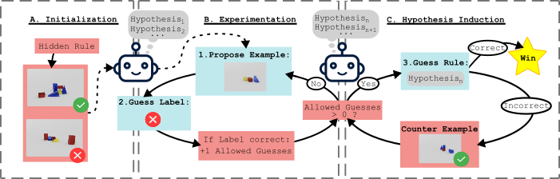
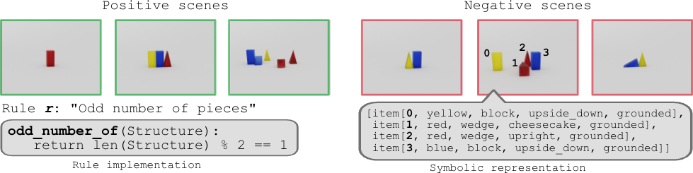
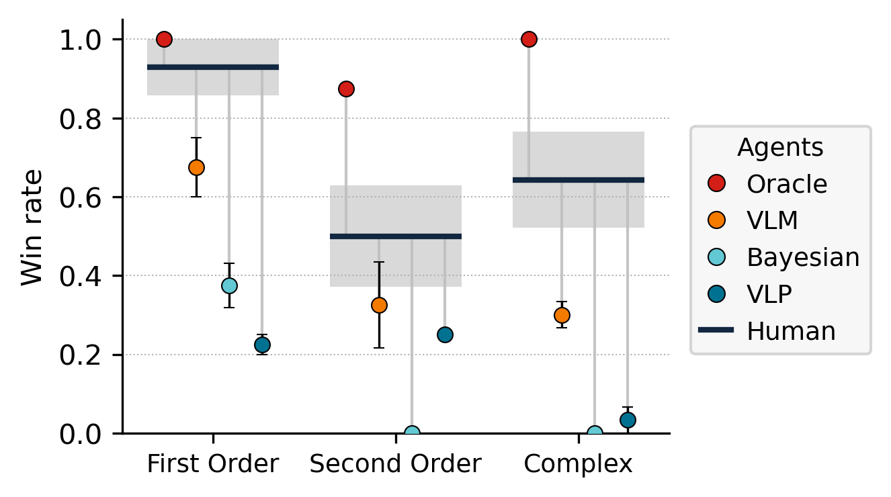
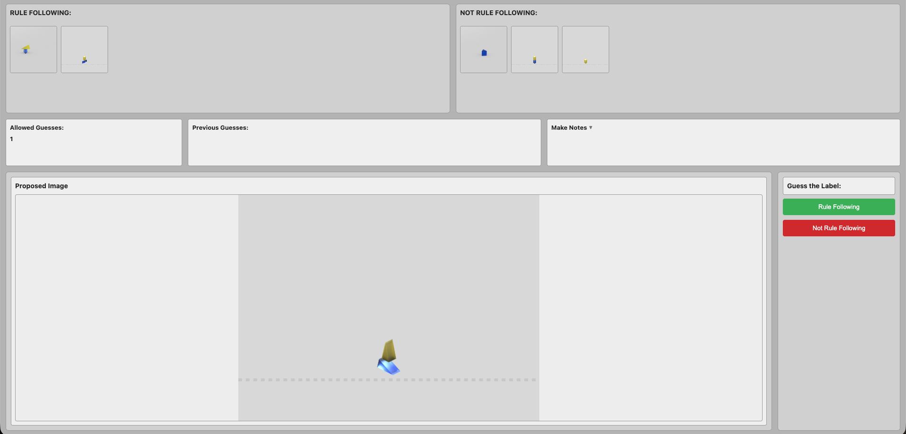
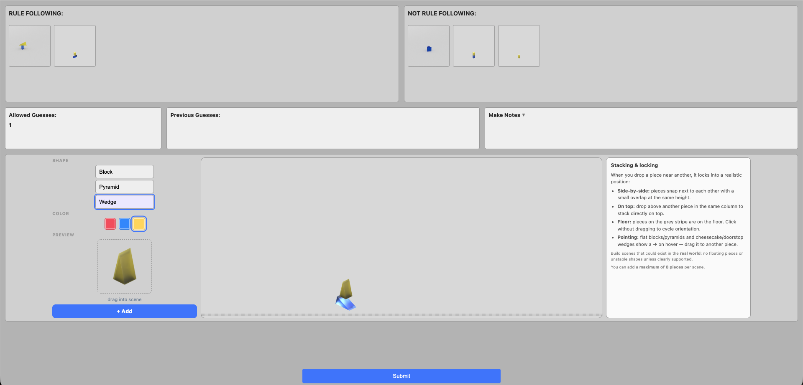
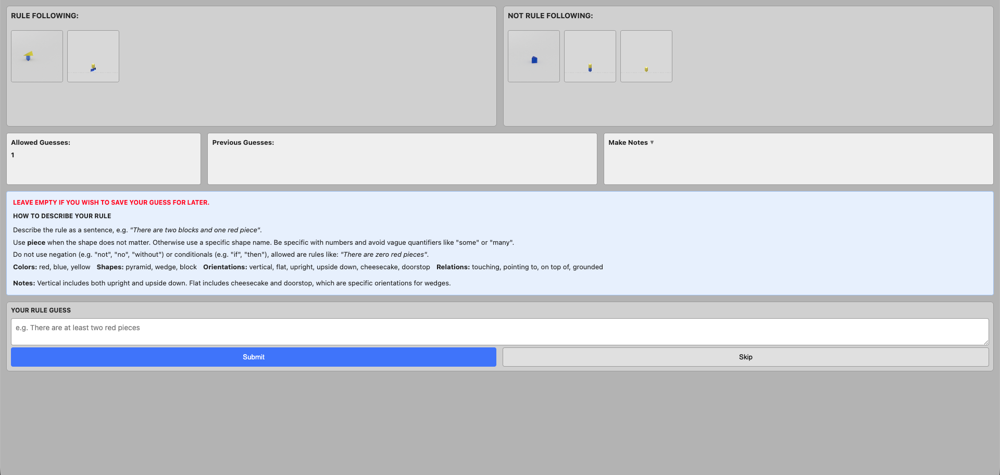

A central challenge in building intelligent systems is enabling agents to jointly perceive complex inputs, form hypotheses about hidden patterns, and design informative experiments to test them. To study this problem, we propose ZendoWorld, a controlled interactive environment in which agents must infer a logical rule about visual game observations, acquire information by proposing new scenes, and refine their hypotheses based on feedback from the game environment. We evaluate several agents spanning pure VLM reasoning, Bayesian particle filtering, dynamic concept discovery, and neuro-symbolic methods. Our main findings are: (1) high accuracy in predicting labels for observed examples does not imply recovery of the underlying rule; (2) perception and induction are distinct bottlenecks for different agent classes; and (3) VLM-based agents propose near-uninformative experiments, failing to actively reduce hypothesis uncertainty. To compare these results, we collect human data on the task, which reveals a gap in inductive reasoning, particularly for more complex rules. Overall, ZendoWorld takes an important step toward evaluating intelligent agents and identifies concrete avenues for improvement, particularly in domains like scientific discovery.
Inspired by the inductive logic game Zendo, each episode centers on a hidden ground-truth rule expressed in a Prolog-based DSL. The agent is initialized with a positive and a negative seed scene, then alternates between two actions:
An episode ends when the agent guesses the rule or exhausts its budget of 30 examples. This design cleanly separates perception, induction, and experimentation as distinct contributors to success or failure.

Scenes are rendered with a procedural Blender–Prolog pipeline. Each scene contains one to seven colored geometric objects (blocks, wedges, pyramids) with symbolic attributes and spatial relations (touching, stacked, pointing at), yielding roughly 1018 configurations. The rule space is organized into three difficulty tiers of increasing structural complexity:

We evaluate four visual rule-learning agents spanning neural, probabilistic, and neuro-symbolic approaches:
Across 22 evaluation games, no learned agent approaches the neuro-symbolic Oracle, and all fall well below human participants. The pure VLM Agent is the strongest of the learned baselines (44.5% wins), but methods designed to add structure (Bayesian (13.6%) and VLP (18.2%)) do not close the gap. Humans solve at least 50% of games across every complexity class, whereas VLM-based agents degrade sharply from first-order to compositional rules.

Ablating visual input by feeding agents symbolic Prolog-style scene descriptions improves every learned agent (the VLP Agent gains over 160%), confirming that perception is a key bottleneck. Yet even in the symbolic setting no agent matches the Oracle, showing that induction is a second, independent bottleneck. Finally, an expected-information-gain analysis reveals that VLM-based agents produce experiments similar to prior observations, adding little new information. This highlights a concrete deficit in active hypothesis testing.
To place agent performance in the context of human capability, we collected behavioral data from 19 participants playing through a browser-based implementation of ZendoWorld deployed on a JATOS server. Participants completed an interactive tutorial and then played one to six games under the same interaction protocol as the agents.



This is a demo of the actual human study, simplified for illustration. The full study uses a Prolog rule engine, Blender-rendered scenes, and multi-turn play against a live backend.
@article{koehler2026playing,
title = {Playing ZendoWorld: Challenging AI Agents on Active Visual Concept Induction},
author = {Koehler, Sophia and W{\"u}st, Antonia and Ibs, Inga and Piriyakulkij, Wasu Top
and Stammer, Wolfgang and Rothkopf, Constantin and Ellis, Kevin and Kersting, Kristian},
journal = {arXiv preprint arXiv:2607.08233},
year = {2026}
}